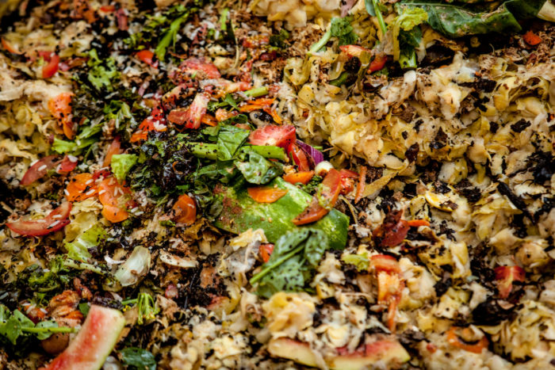

Itens curiosos que podem ir para a compostagem

A compostagem é um processo no qual transforma os resíduos orgânicos – restos de comida, frutas, verduras e legumes- em adubo, rico em nutrientes para o solo. Entretanto, nem todos sabem o que pode ou não ser compostado. Há quem diga que guardanapos e rolos de papel higiênico, por exemplo, precisam ser jogados fora, pois, este material precisa de um tipo específico de reciclagem. Correto? Não, errado!!!
Papeis sem tinta ou folha de jornal preto e branco, podem ser compostados, já que a química contida nestes materias é menor do que as que têm em uma revista ou qualquer tipo de material gráfico colorido. Além disso, outro fato curioso é que o papel do pão também é compostável, assim como o próprio pão. Aproveite o todo e recicle!
Usou um algodão para limpar a pele e não sabe o que fazer? Separe-o e coloque para a compostagem. E aquele palito de dente após a refeição, o que fazer? Também pode para o seu baldinho e virar adubo! Quer saber de mais itens que podem ganhar vida através da compostagem e não atingir o meio ambiente de alguma forma? Segue a lista:
- Casca de amendoim
- Casca de nozes e amêndoas
- Alho e cebola
- Ervas e especiarias
- Grãos em geral – milho, feijão, soja, ervilha etc.
- Frutas e legumes congelados
- Tofu
- Algas e nori (alga para comida japonesa)
- Leite e derivados (desde que congelados)
- Farinhas
- Massas cruas (as cozidas, apenas congeladas)
- Doces, bolos e barras de cereais
- Geleias e goiabada
- Cereais matinais
- Biscoitos
- Migalhas de pão, bolos
- Batata frita e salgadinhos
- Bagaço de cana
- Sementes de girassol, gergelim e abóbora
- Borra de café e o filtro de papel
- Folhas de chá
- Sementes de frutas e legumes
- Polpa de frutas
- Sobras de comida
- Peixes, Carnes e ossos (desde que congelados)
- Resto de ração para animais
- Pelos de animais
- Grama cortada
- Restos de plantas, flores, folhas verdes ou secas
- Aparas de lápis e lápis inteiro
- Giz de cera
- Serragem
- Cinzas de fogueira ou lareira
- Fósforos ,Espetos de madeira, Espetos de bambu, Palitos de dente, Hashi (palitos de comida japonesa)
- Sachês de chá
- Rolhas de vinho (apenas de cortiça)
- Rolos de papel higiênico e de papel toalha
- Forminhas de cupcake
- Caixas de pizza (rasgada em pequenos pedaços)
- Pratos e sacolas de papel
- Embalagens de papelão (rasgada em pequenos pedaços)
- Caixas de ovos (apenas de papelão)
- Lenços de papel
- Sujeira do aspirador de pó
- Algodão (inutilizado ou utilizado sem nenhum contato com produtos químicos)
Aproximadamente 70% do que temos em casa pode ser transformado em adubo através da compostagem. O que você está esperando para mudar o destino dos seus resíduos?